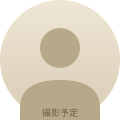

まもなく LINE を開きます…
「無料案件キャッシュバック 代理店プログラム」の LINE 公式アカウントへ移動します。
友だち追加後、15 分面談の日程候補が自動で届きます。
※ このページは計測のための中継ページです。
※ 自動で開かない場合は、こちらをタップしてください。
遷移中…

「無料案件キャッシュバック 代理店プログラム」の LINE 公式アカウントへ移動します。
友だち追加後、15 分面談の日程候補が自動で届きます。
※ このページは計測のための中継ページです。
※ 自動で開かない場合は、こちらをタップしてください。